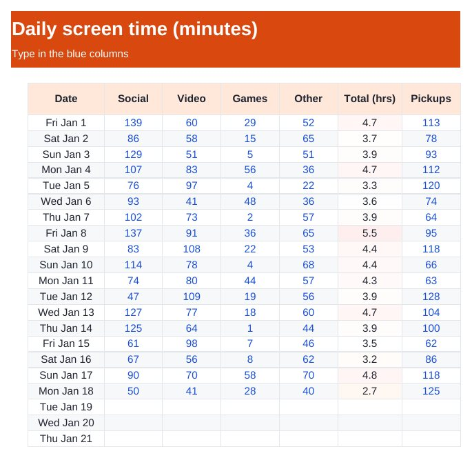

Home › Free Downloads › Excel
Free Excel downloadScreen Time Tracker: What Your Phone Really Costs
Copy yesterday’s minutes from iPhone Screen Time and see what your average adds up to in hours, days and years.
⬇ Download the Excel file .xlsx · free · no sign-upWorks in Microsoft Excel, Google Sheets (File → Import) and Apple Numbers.

What’s inside
- Daily log by category: social, video, games, other, plus pickups
- Average hours a day and hours a year
- Full days a year and years of waking life, age 30 to 80
- What one hour less a day gives back
How to use it
- On iPhone open Settings → Screen Time → See All App & Website Activity.
- Type yesterday’s minutes into the Daily Log.
- Check the Reality Check tab once a week.

Time Debt: Screen Time
Time Debt is an app blocker where extra minutes today are borrowed from tomorrow's screen-time allowance.
Get it free on the App StoreQuestions
Where do I find my screen time on iPhone?
Settings → Screen Time → See All App & Website Activity shows minutes by app and category for each day and week.
How is "years of waking life" worked out?
Your average daily hours, over 50 years (age 30 to 80), divided by 16 waking hours a day.
Does it block apps?
No, a spreadsheet can only track. The free app sets a daily limit using Apple’s Screen Time system.
More free downloads
Daily Water Intake Tracker 2027Shift & Pay Tracker with OvertimeJob Estimate & Invoice TemplateClient Appointment Booking LogSleep Log & Bedtime Routine TrackerBible Reading Tracker: All 66 BooksFamily Emergency Plan TemplateAfter-the-Argument Repair WorksheetThe 11 Human Body Systems: Free SlidesBooks of the Bible by Section: Free SlidesWhy Is the Sky Blue and Sunsets Red? Free Slides